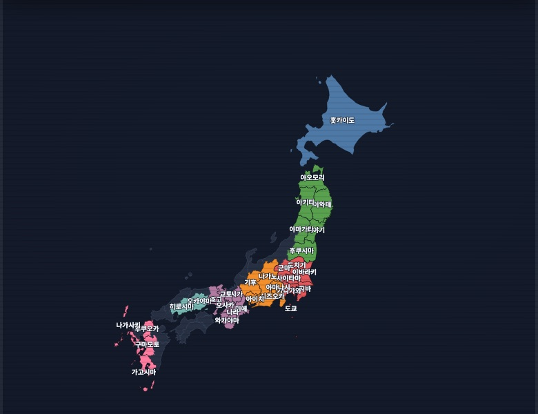
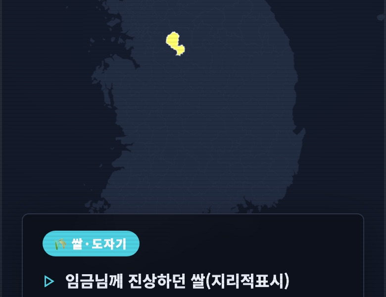

◆ INSERT COIN ◆
타이핑으로 외우는 세계 지리
일본 47개 도도부현 · 한국 시·군 167곳 · 세계 256개국
지목 퀴즈 · 타자 연습 · EJU 모드
SELECT MAP
◆ CHOOSE YOUR GAME ◆

지도 타이핑
지도에 뜬 곳의 이름을 입력하면 그 자리가 색으로 채워져요
JP 47 · KR 16 · 시·군 167 · WORLD 256
자유 채우기 · 지목 퀴즈 · 타자 연습 · EJU
▶ SELECT

지역 특산물
"임금님께 진상하던 쌀"을 보고 이천을 맞히는 퀴즈
시·군 167 · KR 16 · JP 47
특산물 보고 지역 맞히기 · 지역 보고 특산물 고르기
▶ SELECT
지도 출처: 시·군 경계는 통계청 SGIS(공공누리 제1유형)를 vuski/admdongkor가 가공(CC BY 4.0) · 시·도 MapSVG · 세계 svg-maps (CC BY 4.0) · 일본 react-svgmap-japan